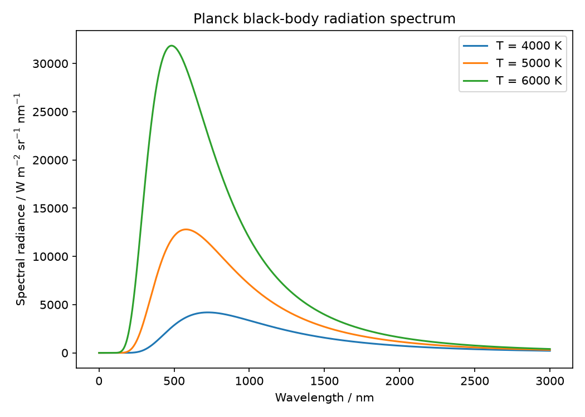
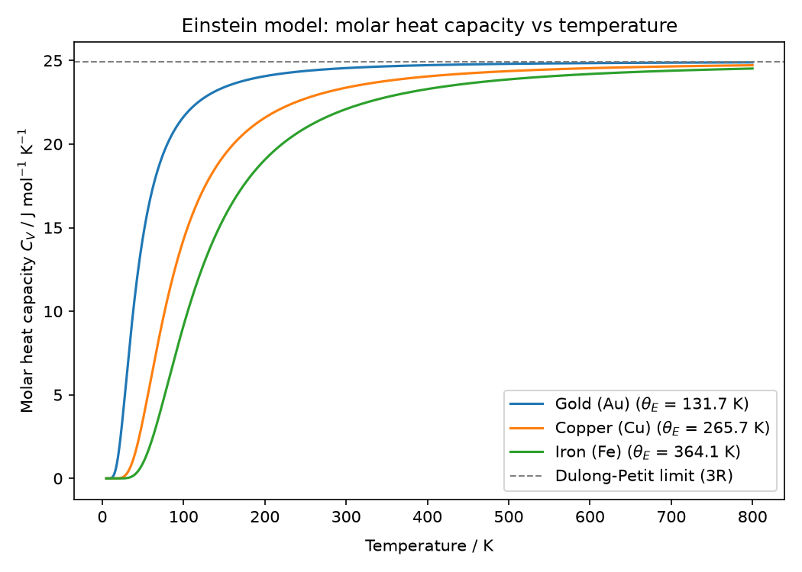
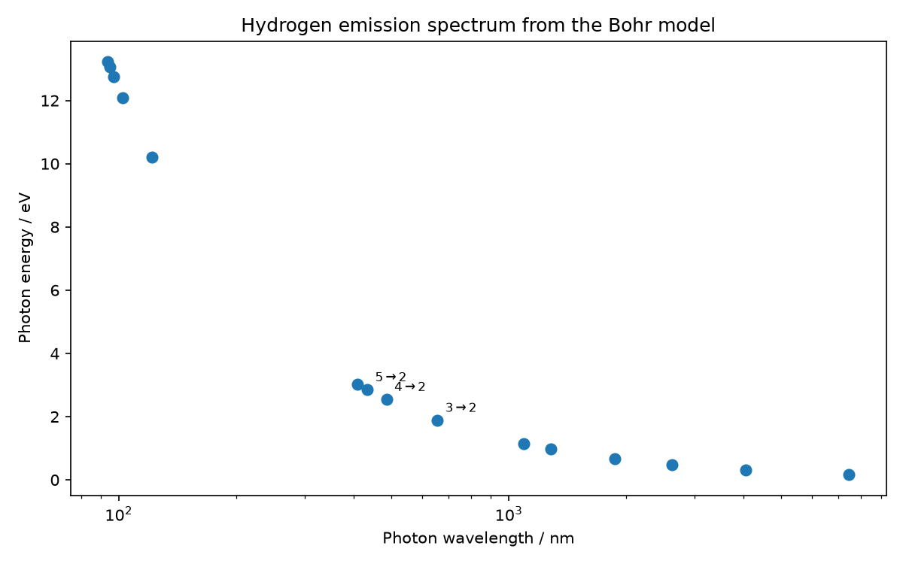
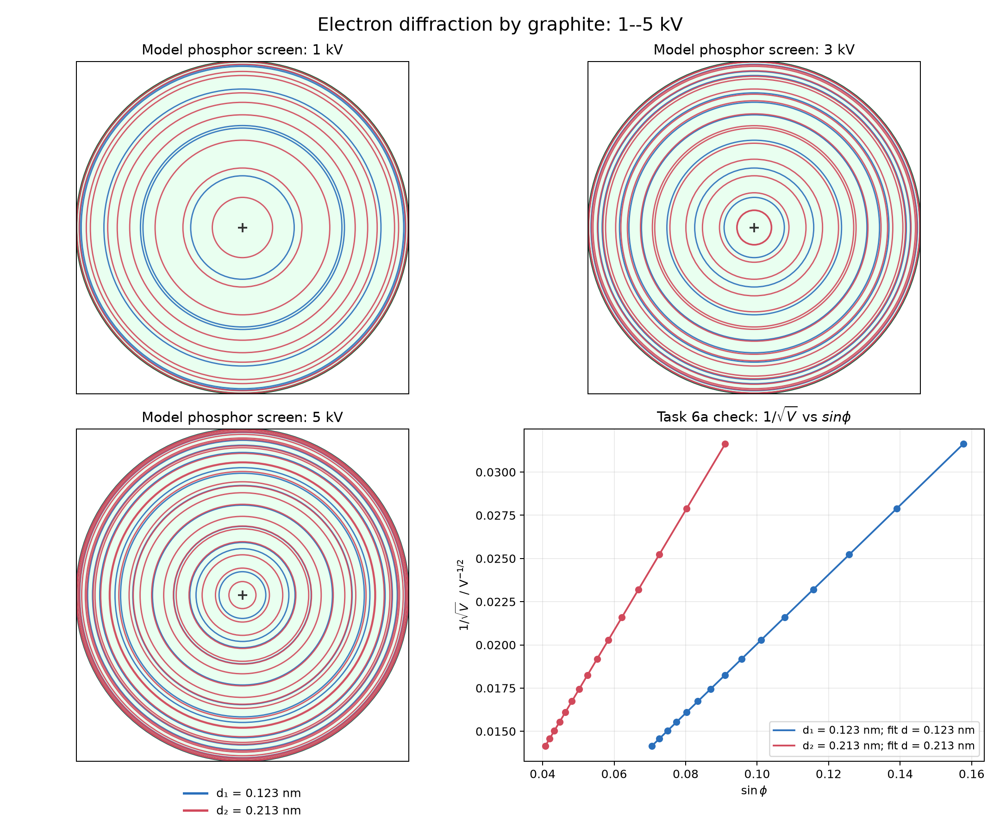
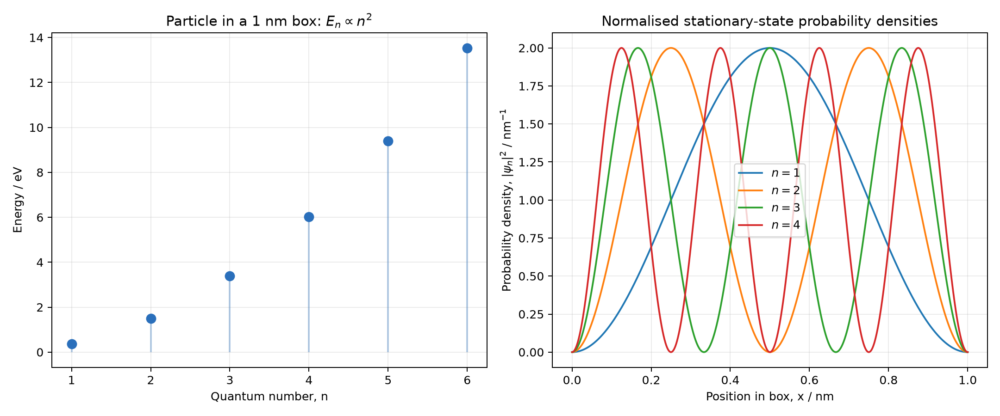
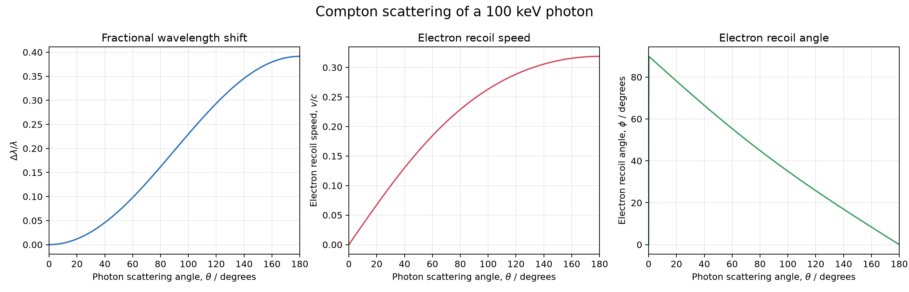
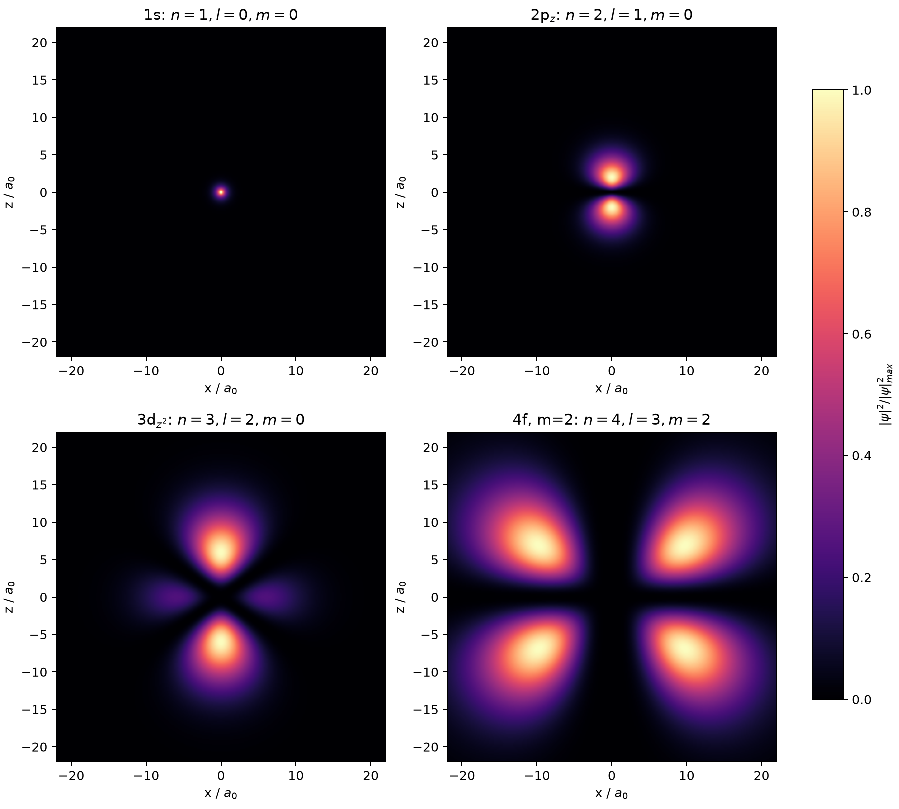
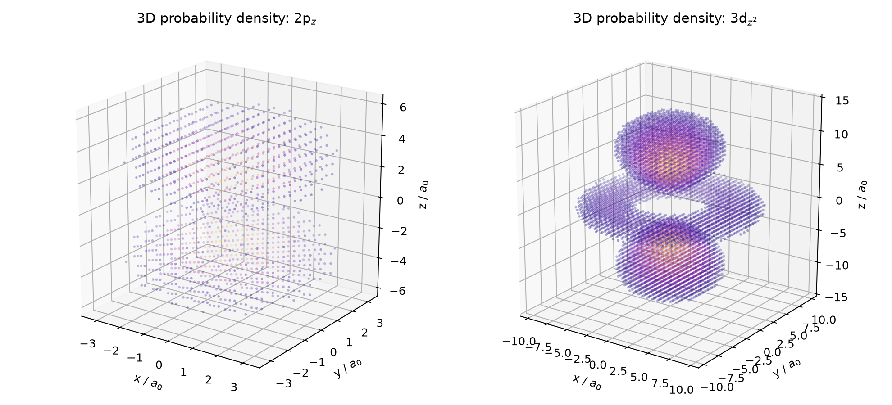

BPHO 2026 · COMPUTATIONAL PHYSICS
Computational
Physics.
Interactive solutions and simulations for the 2026 BPhO Computational Physics challenge.
EXHIBITS
EXHIBIT 01
Random Walk
A two-dimensional random walk with fixed step length and uniformly distributed direction.
Control the walk
Calculation
Each step has fixed length s, but its angle θ is uniformly distributed from 0 to 2π. The vector sum therefore has no preferred direction. Averaging over many walks makes the cross terms vanish, leaving ⟨r²⟩ = Ns², so the typical displacement grows only as s√N, not N.
EXHIBIT 02
Brownian Motion
A simulation of elastic collisions between a large particle and surrounding smaller particles.
Collision chamber
Model
The small particles move with random headings and collide elastically with a larger particle. At a collision, momentum conservation updates the velocity component along the line of centres. The large particle therefore receives a sequence of small impulses and develops an irregular Brownian trajectory.
EXHIBIT 03
Black Bodies & Heat
Planck's law for blackbody radiation and Einstein's model of heat capacity.
Planck spectrum
Calculation
For each wavelength λ, the program evaluates Planck's spectral radiance. Increasing T raises the overall intensity and shifts the maximum toward shorter wavelengths. The task also asks for Einstein's molar heat capacity model, CV = 3R x²ex/(ex−1)² with x = θE/T; its high-temperature limit tends to the Dulong–Petit value 3R.


EXHIBIT 04
Photoelectric Effect
A simulation of photoelectric emission and the stopping potential.
Choose a metal
Calculation
Einstein's equation gives hf = φ + Kmax. Since the stopping voltage satisfies Kmax = eVs, we get Vs = (h/e)f − φ/e. The slope is universal; changing the metal changes the intercept because the work function changes.
EXHIBIT 05
Hydrogen Atom
The allowed energy levels of hydrogen and the wavelengths of emitted photons.
Choose a transition
How Bohr gets the spectrum
Coulomb attraction supplies the centripetal force and angular momentum is quantised: mvr = nℏ. Combining them gives En = −13.6057/n² eV. A downward transition emits a photon with Eγ = Eni − Enf = hc/λ . That relation gives the hydrogen emission lines.

EXHIBIT 06
Electron Diffraction
Electron diffraction from graphite using the de Broglie wavelength.
Diffraction tube
Calculation
Accelerating through V gives the electron momentum p = √(2meeV), so λ = h/p. Graphite then imposes Bragg's condition nλ = 2d sinφ. The spherical screen converts φ into a ring radius. Combining the equations predicts the straight-line check of 1/√V against sinφ.

EXHIBIT 07
Particle in a Box
The energy eigenstates and probability density of a particle in a one-dimensional box.
Quantum number
Why only certain waves fit
Infinite walls force ψ = 0 at both ends. The allowed standing waves therefore have n = 1,2,3,…. Substitution into Schrödinger's equation gives En = n²π²ℏ²/(2ma²). For the extension, the supplied solution gives ΔxΔp/ℏ = ½√(n²π²/3 − 2) , which always exceeds 1/2.


EXHIBIT 08
Quantum Cryptography
A comparison of classical and quantum predictions for mismatch probability.
Set the analyser angles
Comparison
The classical hidden-variable model gives 1 − cos²θ cos²φ − sin²θ sin²φ . The quantum prediction is sin²(φ−θ). Expanding the quantum expression reveals an interference cross-term ½ sin2θ sin2φ, which is absent from the classical model.
EXHIBIT 09
Compton Scattering
Compton scattering of a photon from an electron using relativistic energy and momentum conservation.
Photon energy
Why the wavelength changes
Energy and momentum conservation for photon–electron scattering lead to Δλ = h/(mec)(1−cosθ) . The app computes the scattered photon energy, then obtains the electron momentum from vector momentum conservation and its speed from the relativistic relation γ = 1 + K/(mec²) .

EXHIBIT 10
Hydrogenic Orbitals
Hydrogenic wavefunctions and their probability densities for different quantum numbers.
Choose an orbital

Reading the quantum numbers
The hydrogenic wavefunction separates into a radial part and a spherical harmonic: ψnlm(r,θ,φ) = Rnl(r) Ylm(θ,φ) . The principal number n sets the energy scale and radial structure; l controls angular structure; m selects the magnetic component. The quantity visualised is |ψ|², a probability density, not a literal planetary orbit.

Computational Physics
2026
Interactive solutions and simulations for the 2026 BPhO Computational Physics challenge.